Graphing tips for ggplot2 (and life)
Overview
- Introduce
theme()and customizing graphs usingggplot2 - Demonstrate alternative base themes
- Demonstrate how to customize specific elements of
ggplot2graphs
Customizing the look and feel
ggplot2 includes many default settings that allow you to quickly begin graphing and visualizing data. For rough cuts and quick examinations of your data, these defaults are adequate. For final presentation, you may wish to customize the visual aesthetics of the graph. Here are some important components that are worth learning how to tweak and adjust.
Let’s begin with a scatterplot of Population against Area from the midwest dataset.1 The point’s color and size vary based on state (categorical) and popdensity (continuous) columns respectively.
The below plot has the essential components such as the title, axis labels, and legend setup nicely. But we can go further in modifying these components to establish a different “look”.
Most of the requirements related to look and feel can be achieved using the theme() function. It accepts a large number of arguments. Type ?theme in the R console and see for yourself, or check out the vignette on ggplot2 themes written by the package author.
# Setup
library(tidyverse)
data("midwest", package = "ggplot2")
# Add plot components
gg <- ggplot(midwest, aes(x = area, y = poptotal,
color = state, size = popdensity)) +
geom_point() +
geom_smooth(se = FALSE) +
xlim(0, 0.1) +
ylim(0, 500000) +
labs(title = "Area vs. Population",
x = "Area",
y = "Population",
caption = "Source: midwest")
# Call plot
gg
Default themes
The default theme in ggplot2 is theme_gray. There are a set of pre-made themes you can use which are cohesive themes that don’t require modifying individual elements.
gg + theme_gray()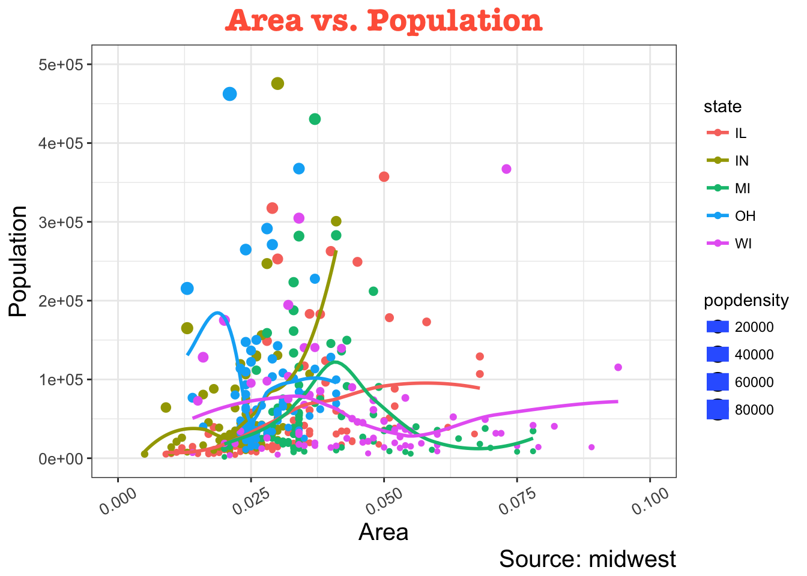
gg + theme_bw()
gg + theme_linedraw()
gg + theme_light()
gg + theme_dark()
gg + theme_minimal()
gg + theme_classic()
gg + theme_void()
I personally prefer to use theme_bw() as it provides excellent contrast when viewed using a projector or large LCD screen, so let’s set that as the default theme and change gg to use theme_bw().
theme_set(theme_bw())
gg <- gg +
theme_bw()
gg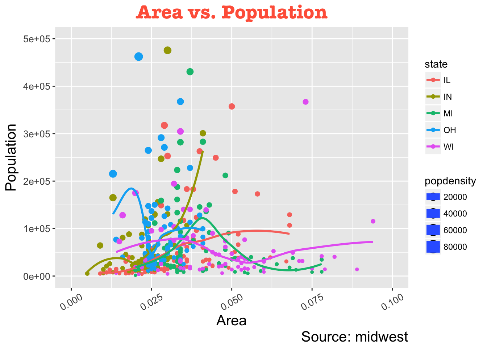
Modifying specific elements
The arguments passed to theme() components must be set using special element_type() functions. There are 4 major types.
element_text()- since the title, subtitle and captions are textual items,element_text()function is used to set it.element_line()- likewiseelement_line()is used to modify line based components such as the axis lines, major and minor grid lines, etc.element_rect()- modifies rectangle components such as plot and panel background.element_blank()- turns off displaying the theme item.
Let’s examine a number of tasks related to changing the plot output, starting with modifying the title and axis texts.
Adding plot and axis titles
Plot and axis titles and the axis text are part of the plot’s theme. Therefore, it can be modified using the theme() function. The theme() function accepts one of the four element_type() functions mentioned above as arguments. Since the plot and axis titles are textual components, element_text() is used to modify them.
Below, I have changed the size, color, face, and line-height. The axis text can be rotated by changing the angle.
# Modify theme components
gg +
theme(
# title
plot.title = element_text(
size = 20,
face = "bold",
family = "American Typewriter",
color = "tomato",
hjust = 0.5,
lineheight = 1.2
),
# subtitle
plot.subtitle = element_text(
size = 15,
family = "American Typewriter",
face = "bold",
hjust = 0.5
),
# caption
plot.caption = element_text(size = 15),
# X axis title
axis.title.x = element_text(vjust = 10,
size = 15),
# Y axis title
axis.title.y = element_text(size = 15),
# X axis text
axis.text.x = element_text(
size = 10,
angle = 30,
vjust = .5
),
# Y axis text
axis.text.y = element_text(size = 10)
)
vjust, controls the vertical spacing between title (or label) and plot.hjust, controls the horizontal spacing. Setting it to 0.5 centers the title.family, is used to set a new fontface, sets the font face (“plain”, “italic”, “bold”, “bold.italic”)
This example covers just some of the potential modifications. Use ?theme to look at the full list of components you can modify.
Modifying the legend
Whenever your plot’s geom_ (like points, lines, bars, etc) is set to change the aesthetics (fill, size, col, shape, or stroke) based on another column, as in geom_point(aes(color = state, size = popdensity)), a legend is automatically drawn.
If you are creating a geom where the aesthetics are static, a legend is not drawn by default. The below examples are for cases where you have the legend created automatically.
How to change a legend title
We have two legends, one each for color and size. The size is based on a continuous variable while the color is based on a categorical (discrete) variable.
There are 3 ways to change the legend title.
Method 1: Using labs()
gg +
labs(color = "State",
size = "Density")
Method 2: Using guides()
gg +
guides(color = guide_legend("State"),
size = guide_legend("Density"))
Method 3: Using scale_aesthetic_vartype() format
The format of scale_aesthetic_vartype() allows you to turn off the legend for one particular aesthetic, leaving the rest in place. This can be done just by setting guide = FALSE. For example, if the legend is for size of points based on a continuous variable, then scale_size_continuous() would be the right function to use.
gg +
scale_color_discrete(name = "State") +
# turn off legend for size
scale_size_continuous(name = "Density", guide = FALSE)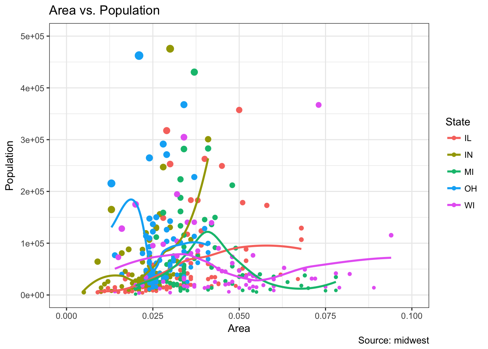
How to change legend labels and point colors for categories
This can be done using the respective scale_aesthetic_manual() function. The new legend labels are supplied as a character vector to the labels argument. If you want to change the color of the categories, it can be assigned to the values argument as shown in below example.
gg +
scale_color_manual(name = "State",
labels = c("Illinois",
"Indiana",
"Michigan",
"Ohio",
"Wisconsin"),
values = c("IL" = "blue",
"IN" = "red",
"MI" = "green",
"OH" = "brown",
"WI" = "orange"))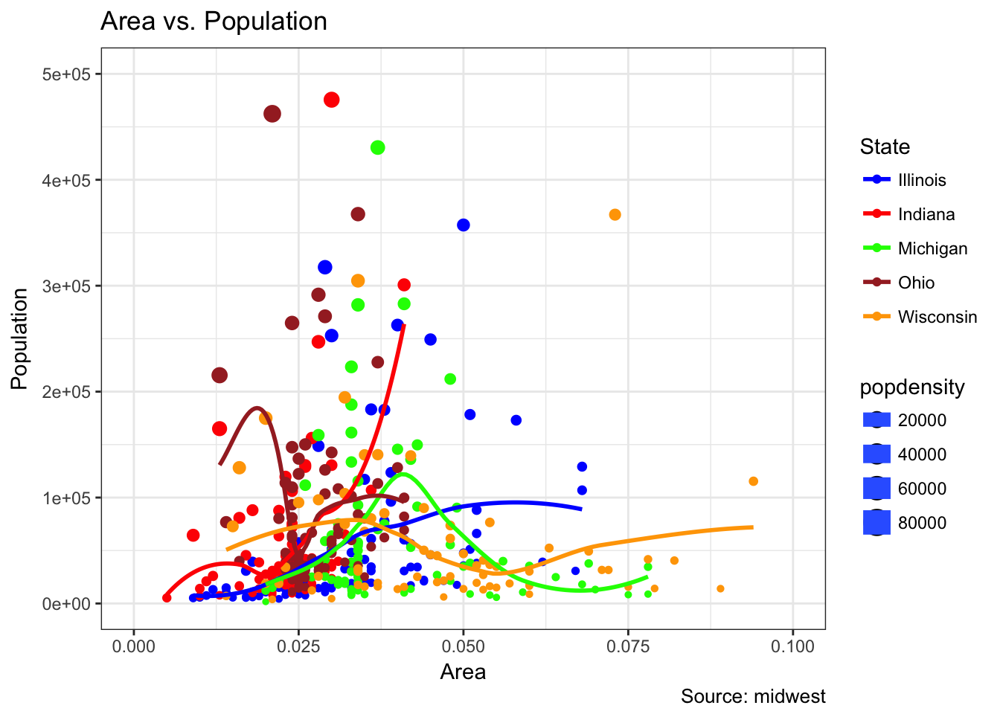
Change the order of the legend
In case you want to show the legend for color (State) before size (Density), it can be done with the guides() function. The order of the legend has to be set as desired.
If you want to change the position of the labels inside the legend, set it in the required order as seen in previous example.
gg +
guides(color = guide_legend(order = 2),
size = guide_legend(order = 1))
How to style the legend title, text, and key
The styling of legend title, text, key and the guide can also be adjusted. The legend’s key is a figure-like element, so it has to be set using element_rect() function.
gg +
theme(
legend.title = element_text(size = 12, color = "firebrick"),
legend.text = element_text(size = 10),
legend.key = element_rect(fill = 'springgreen')
) +
guides(color = guide_legend(override.aes = list(size = 2, stroke = 1.5))) 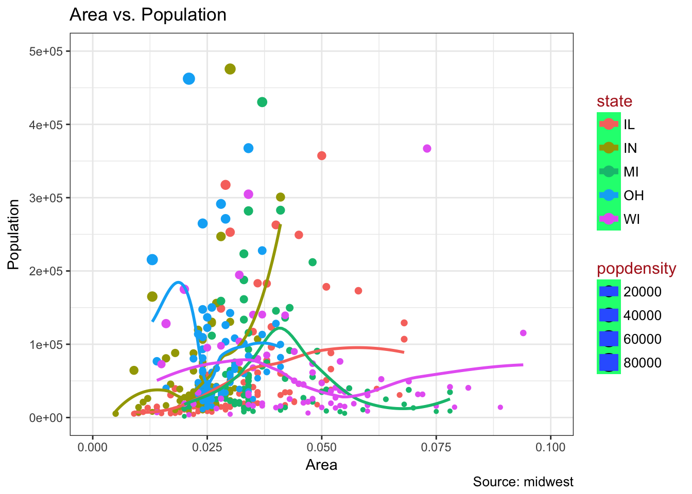
How to remove the legend and change the legend position
The legend’s position inside the plot is an aspect of the theme, so it can be modified using the theme() function. If you want to place the legend inside the plot, you can additionally control the hinge point of the legend using legend.justification.
The legend.position is the x and y axis position in the chart area, where (0,0) is bottom left of the chart and (1,1) is top right. Likewise, legend.justification refers to the hinge point inside the legend.
# No legend
gg + theme(legend.position = "None") +
labs(subtitle = "No Legend")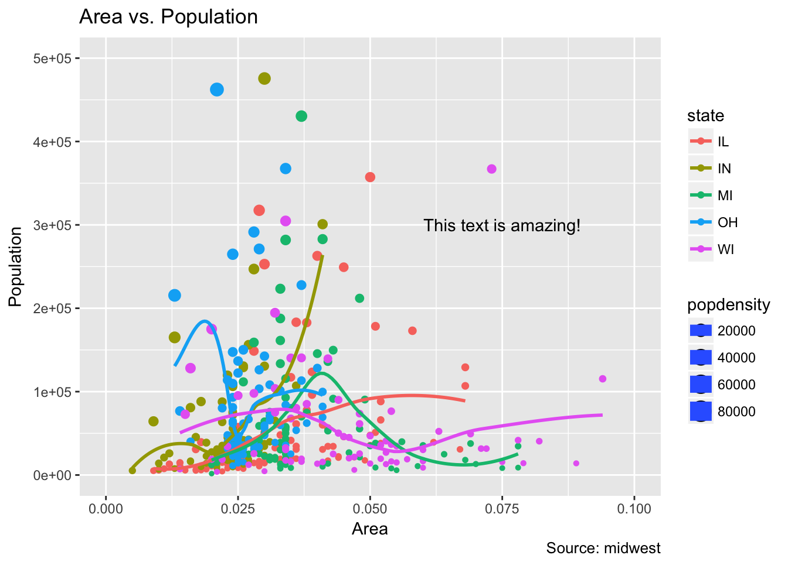
# Legend to the left
gg + theme(legend.position = "left") +
labs(subtitle = "Legend on the Left")
# legend at the bottom and horizontal
gg + theme(legend.position = "bottom", legend.box = "horizontal") +
labs(subtitle = "Legend at Bottom")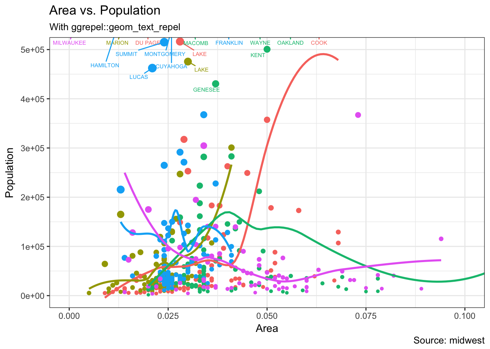
# legend at bottom-right, inside the plot
gg + theme(
legend.title = element_text(size = 12, color = "salmon", face = "bold"),
legend.justification = c(1, 0),
legend.position = c(0.95, 0.05),
legend.background = element_blank(),
legend.key = element_blank()
) +
labs(subtitle = "Legend: Bottom-Right Inside the Plot")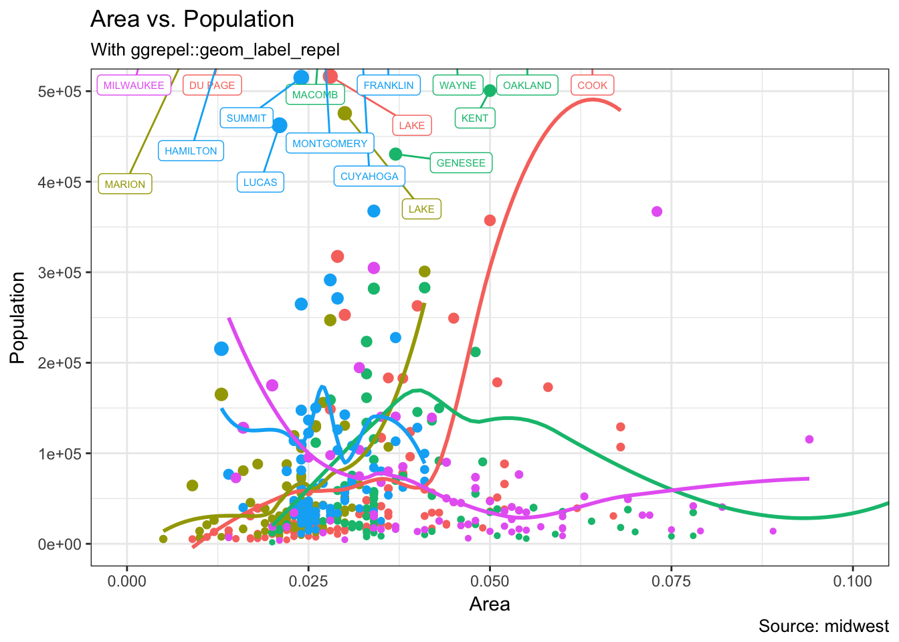
# legend at top-left, inside the plot
gg + theme(
legend.title = element_text(size = 12, color = "salmon", face = "bold"),
legend.justification = c(0, 1),
legend.position = c(0.05, 0.95),
legend.background = element_blank(),
legend.key = element_blank()
) +
labs(subtitle = "Legend: Top-Left Inside the Plot")
Adding text, label, and annotation
How to add text and labels around the points
Let’s try adding some text. We will add text to only those counties that have population greater than 400K. In order to achieve this, I create a subsetted dataframe (midwest_sub) that contains only the counties that meet the condition above. Then, we draw the geom_text and geom_label with this new dataframe as the data source. This will ensure that labels (geom_label) are added only for the points contained in the new dataframe.
# Filter required rows.
midwest_sub <- midwest %>%
filter(poptotal > 400000) %>%
mutate(large_county = ifelse(poptotal > 300000, county, ""))
# Plot text and label
## Text
gg +
geom_text(aes(label = large_county), size = 2, data = midwest_sub) +
labs(subtitle = "With ggplot2::geom_text") +
theme(legend.position = "None")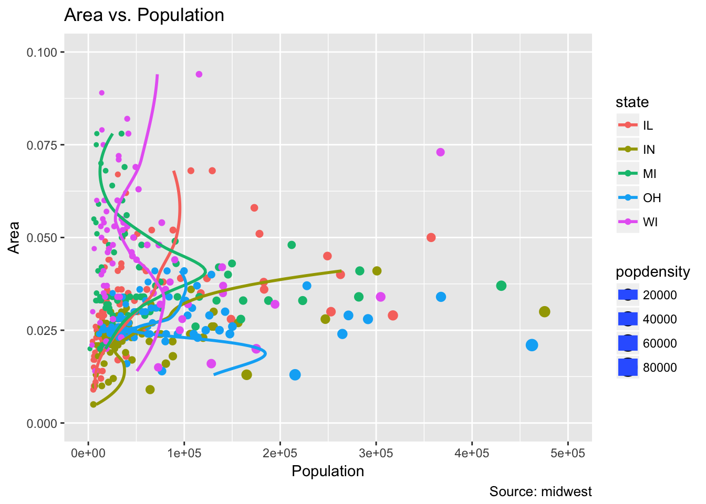
## Label
gg +
geom_label(
aes(label = large_county),
size = 2,
data = midwest_sub,
alpha = 0.25
) +
labs(subtitle = "With ggplot2::geom_label") +
theme(legend.position = "None")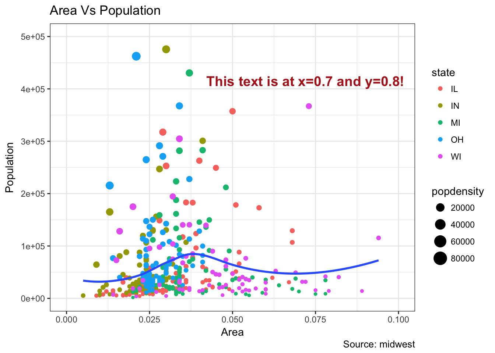
# Plot text and label that REPELS each other
library(ggrepel)
## Text
gg +
geom_text_repel(aes(label = large_county), size = 2, data = midwest_sub) +
labs(subtitle = "With ggrepel::geom_text_repel") +
theme(legend.position = "None")
## Repel
gg +
geom_label_repel(aes(label = large_county), size = 2, data = midwest_sub) +
labs(subtitle = "With ggrepel::geom_label_repel") +
theme(legend.position = "None")
Since the label is looked up from a different data frame, we need to set the data argument in the new geom_ calls.
How to add annotations anywhere inside the plot
Let’s see how to add annotation to any specific point of the chart. It can be done with the annotate() function. For instance, to add text to the graph we use a “text” geom and give it a label containing the text we want to print on the graph. All we need to do then is specify the x and y coordinates on the graph where it should go.
gg +
annotate("text", x = 0.075, y = 300000, label = "This text is amazing!")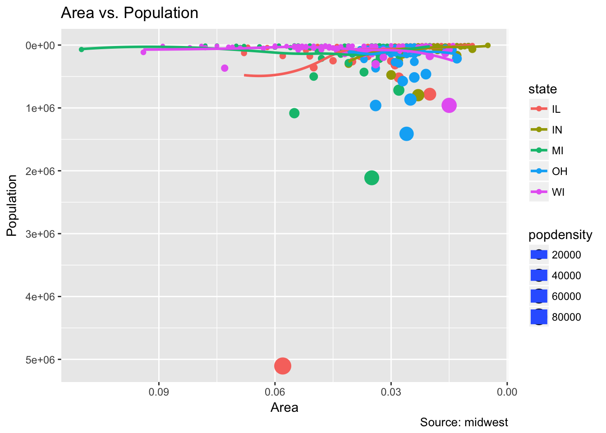
Flipping and reversing the X and Y axis
How to flip the X and Y axis
Just add coord_flip():
gg +
coord_flip()
How to reverse the scale of an axis
Use scale_x_reverse() for X axis and scale_y_reverse() for Y axis.
gg +
scale_x_reverse() +
scale_y_reverse()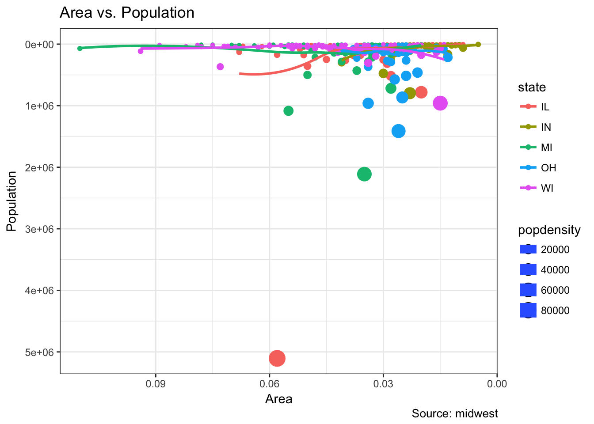
Faceting: draw multiple plots within one figure
Let’s use the mpg dataset for this one. It is available in the ggplot2 package.
data(mpg, package = "ggplot2") # load data
g <- ggplot(mpg, aes(x = displ, y = hwy)) +
geom_point() +
labs(title = "hwy vs displ", caption = "Source: mpg") +
geom_smooth(method = "lm", se = FALSE)
g
We have a simple chart of highway mileage (hwy) against the engine displacement (displ) for the whole dataset. But what if you want to study how this relationship varies for different classes of vehicles?
Facet wrap
facet_wrap() is used to break down a large plot into multiple small plots for individual categories. It takes a formula as the main argument. The items to the left of ~ forms the rows while those to the right form the columns.
By default, all the plots share the same scale in both X and Y axis. You can set them free by setting
scales = 'free'but this way it could be harder to compare between groups.
# Facet wrap with common scales
g +
facet_wrap( ~ class, nrow = 3) +
labs(title = "hwy vs displ",
caption = "Source: mpg",
subtitle = "Ggplot2 - Faceting - Multiple plots in one figure")
# Facet wrap with free scales
g +
facet_wrap( ~ class, scales = "free") +
labs(title = "hwy vs displ",
caption = "Source: mpg",
subtitle = "Ggplot2 - Faceting - Multiple plots in one figure with free scales")
Facet grid
The headings of the middle and bottom rows take up significant space. The facet_grid() would get rid of it and give more area to the charts. The main difference with facet_grid is that it is not possible to choose the number of rows and columns in the grid.
g1 <- g +
facet_grid(manufacturer ~ class)
g1
Let’s make one more to vary by cylinder.
g2 <- g +
facet_grid(cyl ~ class)
g2
Combining multiple plots into a single graph
It is possible to layout both these charts in the same graph using the gridExtra package.
library(gridExtra)
grid.arrange(g1, g2, ncol = 2)
Modifying plot background, major and minor axis
How to change the plot background
# change plot background elements
g +
theme(
panel.background = element_rect(fill = 'khaki'),
panel.grid.major = element_line(color = "burlywood", size = 1.5),
panel.grid.minor = element_line(
colour = "tomato",
size = .25,
linetype = "dashed"
),
panel.border = element_blank(),
axis.line.x = element_line(
colour = "darkorange",
size = 1.5,
lineend = "butt"
),
axis.line.y = element_line(color = "darkorange",
size = 1.5)
) +
labs(title = "Modified Background",
subtitle = "How to Change Major and Minor grid, Axis Lines, No Border")
# change plot margins
g +
theme(plot.background = element_rect(fill = "salmon"),
plot.margin = unit(c(2, 2, 1, 1), "cm")) + # top, right, bottom, left
labs(title = "Modified Background",
subtitle = "How to Change Plot Margin") 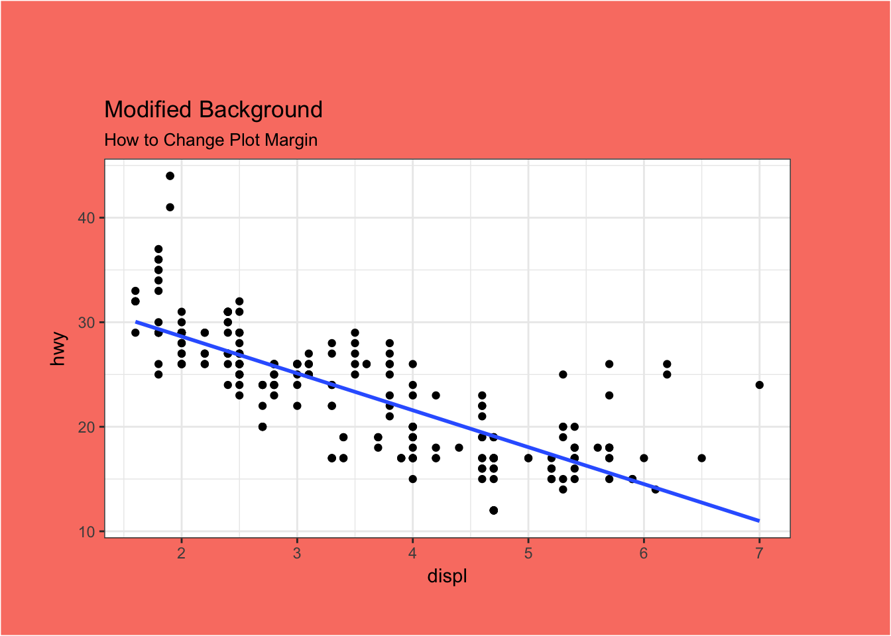
Remove major and minor grid, change border, axis title, text, and ticks
By using the element_blank() type, we can turn off any or all of these components.
g +
theme(
panel.grid.major = element_blank(),
panel.grid.minor = element_blank(),
panel.border = element_blank(),
axis.title = element_blank(),
axis.text = element_blank(),
axis.ticks = element_blank()
) +
labs(title = "Modified Background",
subtitle = "How to remove major and minor axis grid, border, axis title, text and ticks") 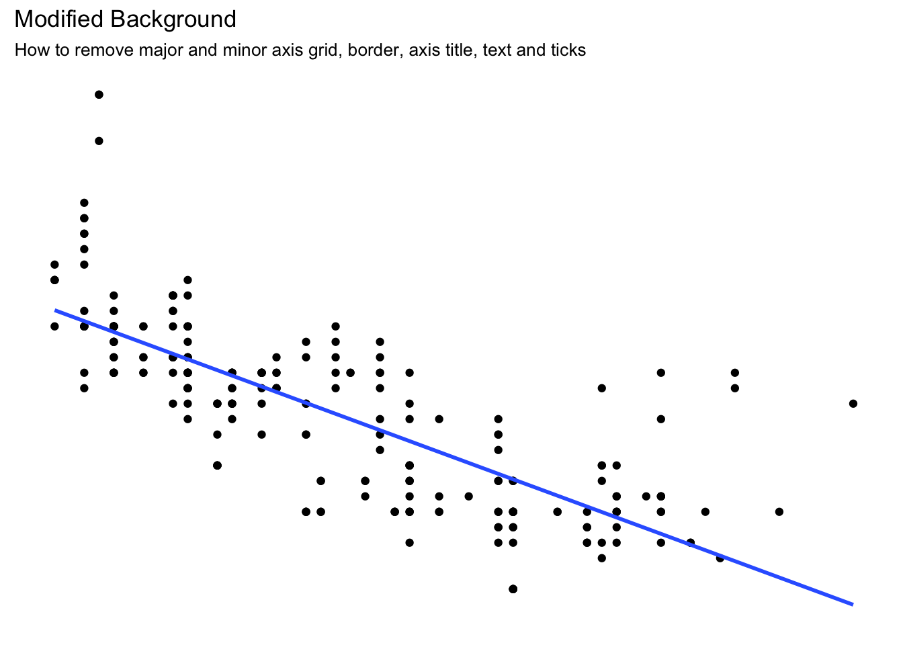
Acknowledgements
- Modified from Selva Prabhakaran’s The Complete ggplot2 Tutorial - Part 2 | How To Customize ggplot2 (Full R code), licensed under the CC BY-NC 3.0 Creative Commons License.
Session Info
devtools::session_info()## setting value
## version R version 3.3.2 (2016-10-31)
## system x86_64, darwin13.4.0
## ui RStudio (1.0.136)
## language (EN)
## collate en_US.UTF-8
## tz America/Chicago
## date 2017-01-25
##
## package * version date source
## assertthat 0.1 2013-12-06 CRAN (R 3.3.0)
## backports 1.0.4 2016-10-24 CRAN (R 3.3.0)
## base64enc 0.1-3 2015-07-28 CRAN (R 3.3.0)
## broom * 0.4.1 2016-06-24 CRAN (R 3.3.0)
## codetools 0.2-15 2016-10-05 CRAN (R 3.3.2)
## colorspace 1.3-2 2016-12-14 CRAN (R 3.3.2)
## config 0.2 2016-08-02 CRAN (R 3.3.0)
## DBI 0.5-1 2016-09-10 CRAN (R 3.3.0)
## devtools 1.12.0 2016-06-24 CRAN (R 3.3.0)
## digest 0.6.11 2017-01-03 CRAN (R 3.3.2)
## dplyr * 0.5.0 2016-06-24 CRAN (R 3.3.0)
## evaluate 0.10 2016-10-11 CRAN (R 3.3.0)
## foreign 0.8-67 2016-09-13 CRAN (R 3.3.2)
## gapminder * 0.2.0 2015-12-31 CRAN (R 3.3.0)
## ggplot2 * 2.2.1 2016-12-30 CRAN (R 3.3.2)
## ggrepel * 0.6.5 2016-11-24 CRAN (R 3.3.2)
## ggstance * 0.3 2016-11-16 CRAN (R 3.3.2)
## gtable 0.2.0 2016-02-26 CRAN (R 3.3.0)
## hexbin * 1.27.1 2015-08-19 CRAN (R 3.3.0)
## highr 0.6 2016-05-09 CRAN (R 3.3.0)
## htmltools 0.3.5 2016-03-21 CRAN (R 3.3.0)
## httr 1.2.1 2016-07-03 CRAN (R 3.3.0)
## jsonlite 1.2 2016-12-31 CRAN (R 3.3.2)
## knitr * 1.15.1 2016-11-22 cran (@1.15.1)
## labeling 0.3 2014-08-23 CRAN (R 3.3.0)
## lattice 0.20-34 2016-09-06 CRAN (R 3.3.2)
## lazyeval 0.2.0 2016-06-12 CRAN (R 3.3.0)
## lubridate * 1.6.0 2016-09-13 CRAN (R 3.3.0)
## lvplot * 0.2.0.9000 2017-01-06 Github (hadley/lvplot@8ce61c7)
## magrittr 1.5 2014-11-22 CRAN (R 3.3.0)
## MASS 7.3-45 2016-04-21 CRAN (R 3.3.2)
## Matrix 1.2-7.1 2016-09-01 CRAN (R 3.3.2)
## memoise 1.0.0 2016-01-29 CRAN (R 3.3.0)
## mgcv 1.8-16 2016-11-07 CRAN (R 3.3.0)
## microbenchmark * 1.4-2.1 2015-11-25 CRAN (R 3.3.0)
## mnormt 1.5-5 2016-10-15 CRAN (R 3.3.0)
## modeltools 0.2-21 2013-09-02 CRAN (R 3.3.0)
## multcomp 1.4-6 2016-07-14 CRAN (R 3.3.0)
## munsell 0.4.3 2016-02-13 CRAN (R 3.3.0)
## mvtnorm 1.0-5 2016-02-02 CRAN (R 3.3.0)
## nlme 3.1-128 2016-05-10 CRAN (R 3.3.2)
## NLP 0.1-9 2016-02-18 CRAN (R 3.3.0)
## nycflights13 * 0.2.1 2016-12-30 CRAN (R 3.3.2)
## plyr 1.8.4 2016-06-08 CRAN (R 3.3.0)
## psych 1.6.9 2016-09-17 cran (@1.6.9)
## purrr * 0.2.2 2016-06-18 CRAN (R 3.3.0)
## R6 2.2.0 2016-10-05 CRAN (R 3.3.0)
## rappdirs 0.3.1 2016-03-28 CRAN (R 3.3.0)
## rcfss * 0.1.0 2017-01-17 local
## Rcpp 0.12.8 2016-11-17 CRAN (R 3.3.2)
## readr * 1.0.0 2016-08-03 CRAN (R 3.3.0)
## readxl * 0.1.1 2016-03-28 CRAN (R 3.3.0)
## reshape2 1.4.2 2016-10-22 CRAN (R 3.3.0)
## rmarkdown 1.3 2016-12-21 CRAN (R 3.3.2)
## rprojroot 1.1 2016-10-29 CRAN (R 3.3.0)
## rsconnect 0.7 2016-12-21 CRAN (R 3.3.2)
## rstudioapi 0.6 2016-06-27 CRAN (R 3.3.0)
## sandwich 2.3-4 2015-09-24 CRAN (R 3.3.0)
## scales 0.4.1 2016-11-09 CRAN (R 3.3.1)
## slam 0.1-40 2016-12-01 CRAN (R 3.3.2)
## sparklyr * 0.5.1 2016-12-19 CRAN (R 3.3.2)
## stringi 1.1.2 2016-10-01 CRAN (R 3.3.0)
## stringr * 1.1.0 2016-08-19 cran (@1.1.0)
## survival 2.40-1 2016-10-30 CRAN (R 3.3.0)
## TH.data 1.0-7 2016-01-28 CRAN (R 3.3.0)
## tibble * 1.2 2016-08-26 cran (@1.2)
## tidyr * 0.6.0 2016-08-12 CRAN (R 3.3.0)
## tidyverse * 1.0.0 2016-09-09 CRAN (R 3.3.0)
## titanic * 0.1.0 2015-08-31 CRAN (R 3.3.0)
## tm 0.6-2 2015-07-03 CRAN (R 3.3.0)
## topicmodels * 0.2-4 2016-05-23 CRAN (R 3.3.0)
## withr 1.0.2 2016-06-20 CRAN (R 3.3.0)
## yaml 2.1.14 2016-11-12 cran (@2.1.14)
## zoo 1.7-14 2016-12-16 CRAN (R 3.3.2)This is included as an example dataset in the
ggplot2package. Type?midwestin your console for more information.↩
This work is licensed under the CC BY-NC 4.0 Creative Commons License.